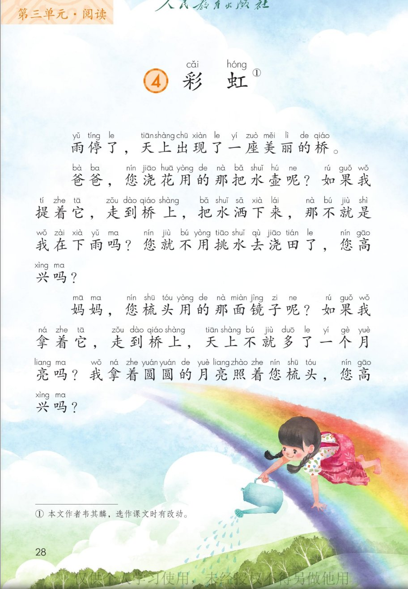
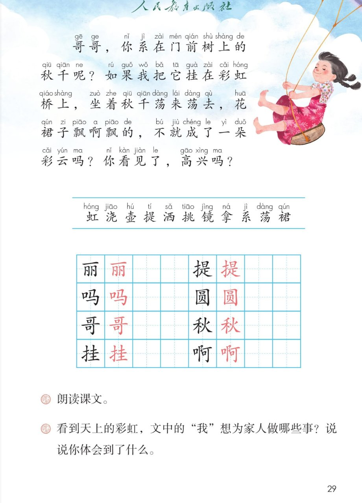

×
🔊 手机听不到声音怎么办？照这 3 步做
① 用
Edge 浏览器打开
www.jeepsh.cn（在微信里打开的点右上角「⋯ → 在浏览器打开」；没装 Edge 就到应用商店搜「Edge」安装）。
② 应用商店搜
「讯飞语记」安装 → 打开它 →
通用设置 → 语音合成设置 → 打开
「合成系统接口」和
「全局生效」两个开关 → 再选一个
中文发音人。
③ 系统语言设为
简体中文，点「
播放」试听能说中文后，
彻底关闭浏览器再重开（后台划掉），回到课件点读就有声音。
→ 打开声音自检
🌈 第 4 课《彩虹》· 有声图文带读
统编版语文 · 第三单元·阅读 · 课本 P28~29
课文 4 个自然段
会认字 11
会写字 8
听写词 8
近义词 4 组
深入理解 8 题
本课本领 分角色朗读
🎧 五步学（可随时点任意一句、一个字、一个词单独听）：
① 听读课文——一句一句读，读到哪一句哪一句发光；开「跟读」后读完一句留时间让你自己读。
② 学字词——11 个会认字、8 个会写字（含书写提示），点一个读一个。
③ 词语·听写·造句——听写 8 个词（读两遍→你写→报答案→听示范句），再听 4 组近义词辨析。
④ 深入理解——8 道题（认知 / 理解 / 运用 / 拓展），开放题答案不唯一，先想后看。
⑤ 讲一讲·分角色——先讲彩虹上的三个心愿，再四个人分角色朗读课文。
① 听读课文（点哪一句，读哪一句）点段前的 ①②③④ 听整段
注音只标本课要认、要写的字，读音来自课本第 29 页生字表
🎤 朗读要求（老师标准）
① 读准字音，不添字、不漏字、不回读；
② 三个问句末尾往上扬，那个“呢”读得轻一点；
③ “您高兴吗”“你看见了，高兴吗”读出又甜又商量的语气；
④ “如果我……”是想象，读得稍快，带点小得意；
⑤ 段与段之间停一拍：先说爸爸，再说妈妈，最后说哥哥。
①雨停了，天上出现了一座美丽的桥。
②爸爸，您浇花用的那把水壶呢？如果我提着它，走到桥上，把水洒下来，那不就是我在下雨吗？您就不用挑水去浇田了，您高兴吗？
③妈妈，您梳头用的那面镜子呢？如果我拿着它，走到桥上，天上不就多了一个月亮吗？我拿着圆圆的月亮照着您梳头，您高兴吗？
④哥哥，你系在门前树上的秋千呢？如果我把它挂在彩虹桥上，坐着秋千荡来荡去，花裙子飘啊飘的，不就成了一朵彩云吗？你看见了，高兴吗？
🤔 想一想（点我可跳过）
课本的样子（点一张图，听读这一页）点图听这一页在讲什么

第 28 页 · 课文前三段

第 29 页 · 第四段与生字
📖 人教版《语文》二年级上册 · 课本第 28~29 页 · 图片仅供个人学习，版权归人民教育出版社所有
② 会认字（11 个）点一个字，听读音、词语和课文里的句子
② 会写字（8 个）结构、部首、笔画与书写提示为通用规范，供参考，以教材和老师的指导为准
丽
lì
美丽 · 秀丽
7 画 · 上下
上横稍短，两框匀称
吗
ma
高兴吗 · 好吗
6 画 · 左右（口）
左窄右宽，马要舒展
哥
gē
哥哥 · 大哥
10 画 · 上下
两个可一样大，竖要直
挂
guà
挂在 · 挂号
9 画 · 左右（扌）
左窄右宽，两土相叠
提
tí
提着 · 提问
12 画 · 左右（扌）
左窄右宽，末捺舒展
圆
yuán
圆圆 · 圆形
10 画 · 全包围（囗）
外框方正，里面写小
秋
qiū
秋千 · 秋天
9 画 · 左右（禾）
左窄右宽，火字撇捺张开
啊
a
飘啊飘 · 好啊
10 画 · 左右（口）
左窄右宽，右耳竖直
③ 读一读，记一记（会写字组词）本课课后没有“读一读，记一记”，这里换成会写字的组词
丽美丽 秀丽 壮丽
哥哥哥 大哥 表哥
圆圆圆 圆形 团圆
③ 听写（8 个词）读两遍 → 你在纸上写 → 报答案 → 听示范句
准备听写 · 共 8 个词
○ ○ ○
点下面的「开始听写」，听到一个词就写一个词。
③ 听写的词 · 造句示范点词听读，点句子听示范句，再自己说一句
1美丽会写字
示范句：雨停了，天上出现了一座美丽的桥。
✏️ 我也能说：什么很美丽。比如：公园里的花很美丽。
2哥哥会写字
示范句：哥哥，你系在门前树上的秋千呢？
✏️ 我也能说：我的哥哥会做什么。比如：我的哥哥会骑自行车。
3秋天会写字
示范句：秋天的树叶黄了，一片一片落下来。
✏️ 我也能说：秋天到了，什么怎么样。比如：秋天到了，稻子熟了。
4挂在课文词语
示范句：如果我把它挂在彩虹桥上。
✏️ 我也能说：谁把什么挂在哪里。比如：我把画挂在墙上。
5提着课文词语
示范句：如果我提着它，走到桥上。
✏️ 我也能说：谁提着什么去哪里。比如：妈妈提着菜篮子去市场。
6圆圆课文词语
示范句：我拿着圆圆的月亮照着您梳头。
✏️ 我也能说：圆圆的什么。比如：圆圆的太阳升起来了。
7好吗课文词语
示范句：妈妈，我帮您浇花，好吗？
✏️ 我也能说：我做什么，好吗。比如：我们一起读书，好吗？
8是啊课文词语
示范句：是啊，雨后的天空真漂亮。
✏️ 我也能说：用是啊接住别人的话。比如：是啊，这座桥真美。
③ 近义词辨析（4 组）相同点 / 不一样在哪 / 各造一句
美丽 — 漂亮
相同：都表示好看。
不一样：美丽多用在景色、花朵、衣裳上，说起来文雅一点；漂亮还能用在人和做事上，比如“这件事办得真漂亮”。
美丽：雨后的彩虹很美丽。
漂亮：妹妹今天穿得真漂亮。
高兴 — 快乐
相同：都是心里欢喜。
不一样：高兴说的是心里的感觉，可以说“我很高兴”；快乐更像笑出来的样子，常说“玩得很快乐”。
高兴：爸爸，您高兴吗？
快乐：今天我们在操场上玩得很快乐。
出现 — 显现
相同：都是原来没有，现在有了。
不一样：出现最常用，人和东西都能用；显现多指慢慢露出来，常写景色。
出现：天上出现了一座美丽的桥。
显现：雾散了，远处的山慢慢显现出来。
荡来荡去 — 摇来摇去
相同：都是来回摆动。
不一样：荡来荡去多指秋千、小船在空中或水上晃；摇来摇去多指东西在原地摆，比如小树、尾巴。
荡来荡去：坐着秋千荡来荡去。
摇来摇去：小狗摇来摇去地摆着尾巴。
③ 词语拓展（说一说，记一记）
…来…去荡来荡去 飘来飘去 飞来飞去 走来走去
写样子美丽的桥 圆圆的月亮 花裙子 一朵彩云
三个如果如果我提着它 如果我拿着它 如果我把它挂在彩虹桥上
一家人爸爸 妈妈 哥哥 我
问句的小尾巴呢 —— 东西在哪里 吗 —— 行不行、高不高兴
④ 深入理解（8 题 · 先想后看）标「答案不唯一」的题，说得有道理都对
认知课文里的“桥”其实是什么？
看解析
🤔 想一想
解析：
“雨停了”才出现 → 雨后才有的是彩虹。
题目就叫《彩虹》，读题目就能猜到。
真正的桥是用石头、木头造的，不会出现在天上。
💡 读题目、想生活，两处一对，答案就出来了
认知“我”想拿爸爸的什么、妈妈的什么、哥哥的什么？
看解析
🤔 想一想
解析：
爸爸的：水壶——浇花用的那把。
妈妈的：镜子——梳头用的那面。
哥哥的：秋千——系在门前树上的。
💡 三个人、三样东西，一段一段对下来就不会漏
理解看到天上的彩虹，文中的“我”想为家人做哪些事？说说你体会到了什么。
看解析
🤔 想一想
解析：
为爸爸：洒水当雨，省得爸爸挑水浇田。
为妈妈：多一个月亮，照着妈妈梳头。
为哥哥：秋千挂在桥上，裙子变成彩云给他看。
体会到：心里装着家人，做什么都想着让家人高兴。
🌈 答案不唯一，说清“做了哪些事 + 体会到什么”就好
理解三个自然段都是“如果我……您高兴吗”，这样写有什么好处？
看解析
🤔 想一想
解析：
好读：三段句式一样，读起来有节奏，像小诗。
清楚：先问“东西呢”，再说“如果”，最后问“高兴吗”，一步步来。
暖心：反复问“您高兴吗”，心意一遍遍说出来。
🌈 答案不唯一，说出一点就很好
理解为什么偏偏拿水壶、镜子、秋千？它们和彩虹有什么关系？
看解析
🤔 想一想
解析：
水壶 → 洒水像下雨，彩虹正是雨后才有。
镜子 → 圆圆的像月亮，天上多一个月亮。
秋千、花裙子 → 飘起来像彩云，彩云也在天上。
🌈 答案不唯一，能说出“像在哪里”就很棒
运用照样子说一句：如果我拿着它，走到桥上，天上不就多了一个月亮吗？
看解析
🤔 想一想
解析：
如果我拿着画笔，走到桥上，天上不就多了一道彩虹吗？
如果我拿着小铃铛，走到桥上，天上不就多了一串铃声吗？
如果我拿着风筝，走到桥上，天上不就多了一只小鸟吗？
🌈 答案不唯一，把“拿着什么”和“天上多了什么”对上就好
运用用“如果……就……”说一句话。
看解析
🤔 想一想
解析：
如果明天不下雨，我们就去公园放风筝。
如果我认真练字，字就会越写越好看。
如果秋千挂在彩虹桥上，我就能荡到云里去了。
🌈 答案不唯一，前半句是条件、后半句是结果就对
拓展看到彩虹，你还想为家人做什么？说一说。
看解析
🤔 想一想
解析：
给奶奶：剪一小段彩虹做围巾。
给爷爷：请彩虹弯下来当拐杖。
给妹妹：把彩虹当滑梯，带她滑下来。
🌈 答案不唯一，说清“想做什么 + 为什么”就是完整的一段话
⑤ 讲一讲：彩虹上的三个心愿点一张卡，听这一步，再连起来讲一遍
💬 讲故事支架：先雨停了，天上出现彩虹 → 再提水壶上桥洒水，像下雨 → 接着拿镜子上桥，多一个月亮 → 然后挂秋千上桥，裙子变彩云 → 最后三个心愿，都是为了让家人高兴。
⑤ 分角色朗读（课后题①：朗读课文）四个人各读一段，点一个角色，听他（她）说的话
👧 我 · 对爸爸说
“爸爸，您浇花用的那把水壶呢？”
“如果我提着它，走到桥上，把水洒下来，那不就是我在下雨吗？”
“您就不用挑水去浇田了，您高兴吗？”
💬 要读出亲切、又有点小得意的语气
👧 我 · 对妈妈说
“妈妈，您梳头用的那面镜子呢？”
“如果我拿着它，走到桥上，天上不就多了一个月亮吗？”
“我拿着圆圆的月亮照着您梳头，您高兴吗？”
💬 要读出温柔、心疼妈妈的语气
👧 我 · 对哥哥说
“哥哥，你系在门前树上的秋千呢？”
“如果我把它挂在彩虹桥上，坐着秋千荡来荡去，花裙子飘啊飘的，不就成了一朵彩云吗？”
“你看见了，高兴吗？”
💬 要读出轻快、又惊又喜的语气
📖 旁白
“雨停了，天上出现了一座美丽的桥。”
💬 要读得清楚、平稳，像在讲故事
💬 分角色小提示：课文是“我”一个人对三个家人说话，所以可以四个人各读一段——第 1 位读旁白（第一自然段），第 2 位读对爸爸说的，第 3 位读对妈妈说的，第 4 位读对哥哥说的。最后一句“你看见了，高兴吗？”四个人一起读。